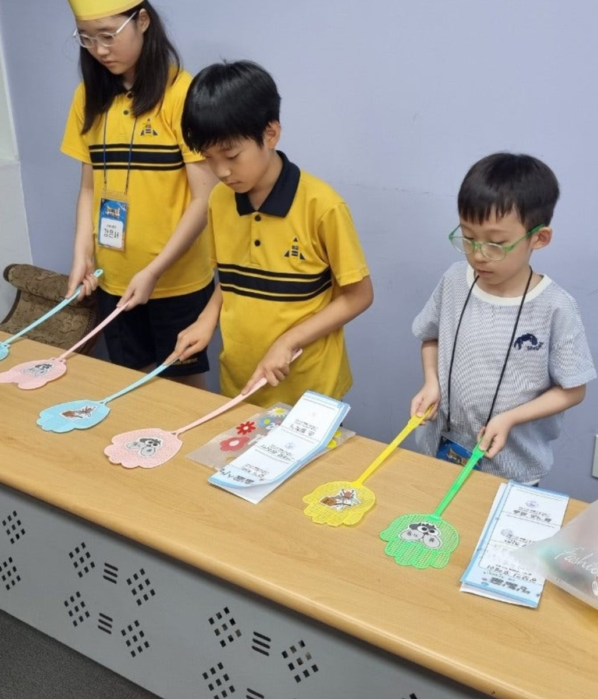
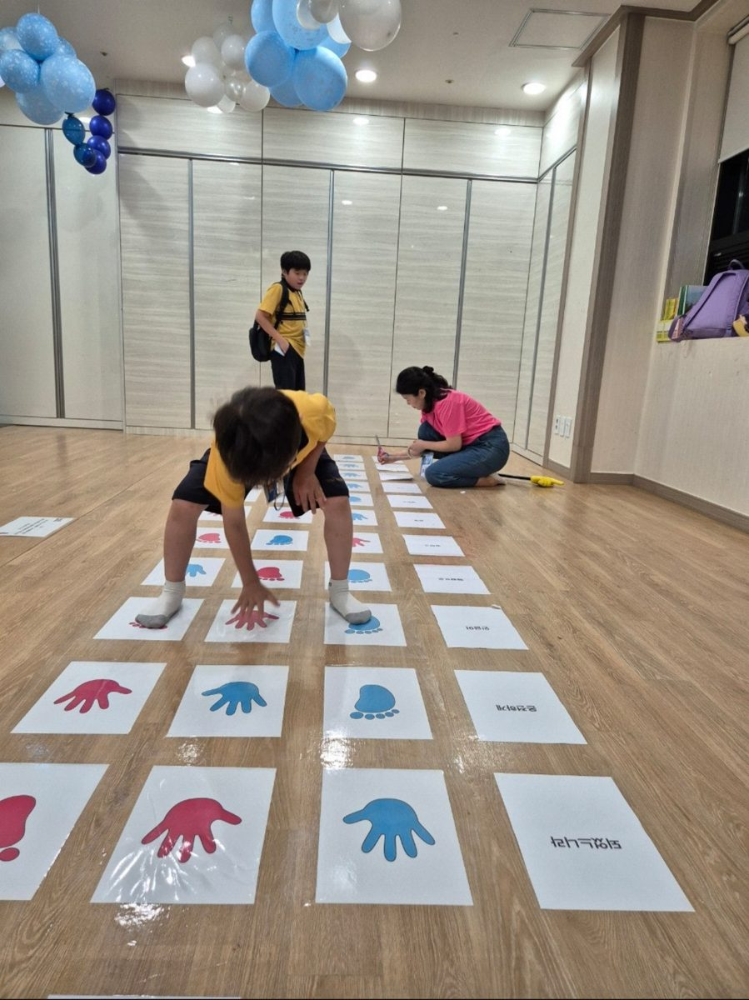
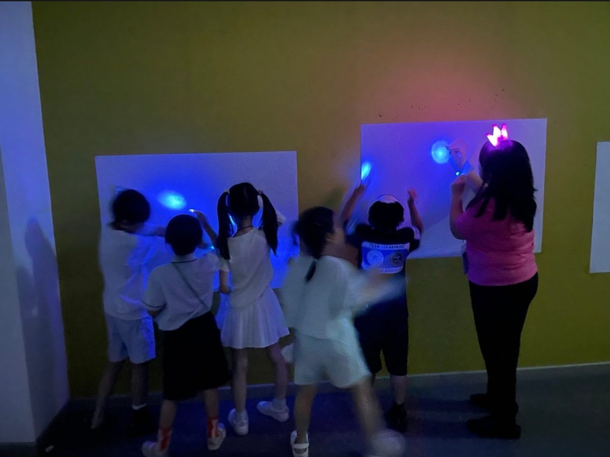

부스 다섯 곳
오늘의 주제는 사사기입니다. 이스라엘이 어려울 때 하나님께서 사사들을 세워 백성을 구원하셨습니다(사사기 2장 16절). 아이들은 사사들처럼 다섯 미션에 도전하는 하나님의 큰 용사가 됩니다. 조 없이 가고 싶은 부스를 골라 다닙니다. 맡으신 부스를 누르면 바로 그 부스 안내로 갑니다.
- 1드보라와 바락의 노래찬양 리듬게임. 두 사람이 찬양에 맞춰 발판을 밟습니다. 등급 C 이상이면 성공.
- 2기드온의 300 용사녹음 명령대로 횃불과 나팔을 올리고 내립니다. 3단계까지 한 번도 틀리지 않으면 성공.
- 3에훗을 따라 요단 나루 건너기손발 징검다리. 그림에 손발을 짚고 말씀 낱말을 읽으며 제한 시간 안에 건넙니다.
- 4해처럼 빛나는 말씀어두운 방에서 펜 불빛으로 숨은 말씀 낱말 아홉 개를 찾습니다.
- 5베냐민 물매 용사다트판에 공 세 개를 던져 점수 합이 정한 점수 이상이면 성공입니다.
진행 약속
- 부스 담당은 부스마다 한 사람입니다. 판 진행, 성공 판정, 사인, 간식만 맡습니다. 규칙은 부스 앞에 붙인 A3 규칙판에 있어서 아이들이 줄에서 읽고 옵니다. 판이 시작되면 설명 없이 바로 합니다. 처음 온 아이가 헷갈려하면 한 번만 보여 줍니다.
- 한 판은 짧게, 계속 돌립니다. 판이 끝나면 줄 앞에서부터 바로 다음 판을 시작합니다. 한 명만 와도 시작합니다.
- 난이도는 두 가지입니다. 저학년(유치·1·2·3학년)과 고학년(4·5·6학년). 아이에게 학년을 물어 고릅니다.
- 미션을 못 하면 탈락입니다. 줄 맨 뒤에 다시 서서 다시 도전합니다. 도전 횟수는 제한하지 않습니다. 해처럼 빛나는 말씀은 시간 제한 없이 다 찾으면 성공입니다.
- 몰리면 나눕니다. 줄이 부스마다 정한 수를 넘으면 “지금 ○번 부스가 비어 있어요” 하고 다른 부스를 알려 줍니다.
하늘 여권과 간식
- 명찰은 없습니다. 아이마다 하늘 여권 한 장을 받습니다. 여권에 부스 다섯 칸이 있습니다.
- 미션에 성공하면 부스 담당이 그 부스 칸에 사인하고, 그 자리에서 간식을 하나 줍니다. 부스마다 사인펜과 간식 바구니를 둡니다.
- 사인과 간식은 부스마다 첫 성공 때 한 번입니다. 이미 성공한 부스는 다른 부스를 다 한 뒤에 차례를 기다려 다시 할 수 있습니다.
맡은 일
| 역할 | 사람 수 | 할 일 |
|---|---|---|
| 총진행 | 1 | 오프닝·클로징, 시간 알림(5:20, 5:25), 부스 사이를 돌며 몰리는 부스와 빈 부스 살피기, 막힌 부스 돕기 |
| 부스 담당 | 부스마다 1 (5명) | 수지교회 교사와 북수원·수원국제 교회 선생님(향남 교회는 오실 수 있는지 확인 중). 자기 부스를 미리 한 판 해 보고, 판 진행·판정·사인·간식을 맡습니다. 드보라와 바락의 노래(찬양 리듬게임)는 컴퓨터를 다룰 줄 아는 사람 |
사람이 적어 부스 도우미는 따로 두지 않습니다. 한 사람이 두 부스를 맡지 않습니다.
오시는 선생님께
- 3시 30분까지 오셔서 맡으실 부스로 가 주세요. 아이들이 오기 전에 자기 부스를 직접 한 판 해 보세요(예행연습). 이 페이지 위쪽 목차에서 맡으신 부스를 누르면 해야 할 일이 모두 나옵니다.
- 아이가 오면 학년만 묻고 바로 판을 시작합니다. 규칙을 물으면 규칙판을 가리켜 주세요.
- 성공한 아이의 여권에 사인하고 간식을 하나 주세요.
- 줄이 길면 다른 부스가 비어 있다고 알려 주세요.
- 5시 20분 알림 뒤에는 새 판을 시작하지 않습니다. 진행 중인 판만 마칩니다(가장 긴 판은 기드온 미션 안내포함 녹음으로 4분쯤이라 5시 25분 전에 끝납니다). 해처럼 빛나는 말씀은 5시 20분부터 새로 들여보내지 않고, 방 안에 남은 아이는 부스 담당이 남은 자리를 알려 주어 5시 25분 전에 마칩니다. 5시 25분에 부스를 정리하고 아이들과 모입니다.
드보라와 바락의 노래찬양 리듬게임
나 곧 내가 여호와를 노래할 것이요 이스라엘의 하나님 여호와를 찬송하리로다 사사기 5장 3절 일부
드보라와 바락은 하나님께서 주신 승리 뒤에 함께 노래했습니다(사사기 5장 1절). 두 사람이 나란히 서서, 화면에서 올라오는 화살표가 맨 위 칸에 닿을 때 발판의 같은 칸을 밟습니다. 대결이 아닙니다.
- 한 판
- 2명, 2분 안팎 (곡 59초~1분 32초와 교대 20초)
- 줄
- 8명이 넘으면 다른 부스로 안내합니다. 혼자 온 아이는 혼자 하거나 부스 담당이 옆 발판에서 짝이 됩니다.
- 성공
- 곡이 끝난 뒤 결과 화면의 등급이 C 이상. 저학년은 쉬움(2 / Kids Easy), 고학년은 중간(4 / Kids Medium)
한 판
- 줄에서
- 줄 선 순서대로 둘씩 짝을 짓습니다.
- 0:00
- 두 사람이 발판에 오르면 부스 담당이 학년을 묻고 난이도를 사람마다 따로 골라 줍니다. 각자 자기 발판의 위나 아래를 한 번 밟으면 그 사람 난이도만 바뀝니다. 화면의 위 칸이 왼쪽 사람, 아래 칸이 오른쪽 사람입니다. 저학년은 2 / Kids Easy, 고학년은 4 / Kids Medium입니다. 6(어려움)은 고르지 않습니다. 난이도를 고른 뒤 START를 눌러 곡을 시작합니다.
- 0:59~1:32
- 1절이 끝나고 소리가 작아지며 곡이 끝나면 결과 화면에서 두 사람의 등급을 봅니다. C 이상이면 성공이라 사인과 간식을 줍니다. C보다 낮으면 줄 맨 뒤에서 다시 도전합니다. 결과 화면을 길게 두지 않고 START로 넘겨 다음 짝이 바로 올라갑니다.
이 부스는 다른 부스를 다 한 아이가 차례를 기다려 더 할 수 있습니다.
준비
- 찬양 리듬게임 컴퓨터, 큰 화면, 스피커, 춤 발판 2개. 발판은 넓은 테이프로 바닥에 붙이고 옆에 줄 서는 자리를 테이프로 표시합니다.
- 곡은 다섯 곡이고 1절까지만 나온 뒤 소리가 작아지며 끝납니다(59초~1분 32초). 줄이 길면 짧은 곡인 ‘주의 자비가 내려와’와 ‘너와 나의 모습이’(1분 안팎)를 고릅니다. 곡 선택 화면을 미리 띄워 둡니다. 아이에게 곡을 고르게 하면 고르는 데 시간이 다 갑니다.
막힐 때
- 발판이 안 눌리면 키보드로 곡을 시작합니다. 왼쪽 사람은 방향키와 Enter, 오른쪽 사람은 W·A·S·D와 스페이스입니다. 뒤로 가기는 Esc입니다(발판 하나는 SELECT가 고장 나 있습니다).
- 화살표는 상하좌우 네 방향만 나옵니다. 발판의 대각선과 가운데 칸은 밟아도 아무 일이 없습니다. 가운데는 쉬는 자리입니다.
- 발판 점검(바탕 화면 ‘찬양 리듬게임’ 폴더의
패드확인.bat)과 다시 설정하기는 게임을 닫고 해야 합니다. 줄이 빌 때 부스를 2~3분 쉬고 합니다. - 어린 아이가 화살표를 못 따라가면 짝이 옆에서 같이 밟으며 “지금!” 하고 말해 줍니다.
기드온의 300 용사횃불과 나팔
세 대가 나팔을 불며 항아리를 부수고 왼손에 횃불을 들고 오른손에 나팔을 들어 불며 외쳐 이르되 여호와와 기드온의 칼이다 하고 사사기 7장 20절
청기 백기를 횃불과 나팔로 하는 놀이입니다. 왼손에 횃불, 오른손에 나팔을 쥐고, 녹음 속 진행자가 “횃불 올려!”, “나팔 내리지 마!”처럼 쉬지 않고 이어 가는 명령대로 올리고 내립니다. 기드온의 용사들이 대장의 신호를 놓치지 않았듯, 녹음 목소리만 듣고 따릅니다.
- 한 판
- 4명까지(파리채 소품이 4쌍). 안내없음 녹음 2분 안팎(4·5·6학년 약 2분 20초), 안내포함 3분 15초~4분 5초
- 줄
- 판이 끝나면 줄 앞에서부터 바로 다음 판. 줄이 12명을 넘으면 실패한 아이는 다른 부스에 다녀온 뒤 다시 섭니다.
- 도전
- 1단계부터 3단계까지 한 번도 틀리지 않고 끝까지 남기. 성공하면 하늘 여권에 사인하고 간식 하나(녹음에서 말하는 ‘도장’이 사인입니다)

성공 기준
- 한 번이라도 틀리면 실패입니다. 살짝 움찔하기만 해도 실패입니다. 말끝을 듣기 전에 움직였다가 돌아와도 틀린 것입니다. “올려”인지 “올리지 마”인지는 말끝에서 갈립니다.
- 실패한 아이는 그 자리에서 소품을 내려놓고 줄 맨 뒤에 서서 처음부터 다시 도전합니다. 도전 횟수는 제한하지 않습니다.
- 성공한 아이는 하늘 여권의 기드온 칸에 사인을 받고 간식을 하나 받습니다.
자세와 말
- 횃불은 왼손, 나팔은 오른손. 모양은 두 가지뿐입니다. 손잡이를 쥔 채 소품 머리(그림 붙인 쪽)를 책상에 붙인 것이 내린 모양, 어깨 위로 번쩍 올린 것이 올린 모양입니다. 단계마다 둘 다 내린 모양에서 시작합니다.
- “올려”는 올리고 “내려”는 내립니다. 이미 올라가 있는데 또 “올려”, 이미 내려가 있는데 또 “내려”가 나오면 그대로 가만히 있습니다. “~하지 마”, “~하지 말고”도 가만히, 말하지 않은 소품도 그대로입니다. “둘 다”는 두 소품 모두에 적용하되, 이미 그 모양인 소품은 그대로 둡니다.
- 두세 가지를 이어 말하는 명령(“나팔 올리고, 횃불 내려!”)은 앞에서부터 차례대로 하고, 마지막 모양까지 맞아야 합니다. 4·5·6학년판에만 나옵니다.
- 낮은 남자 목소리는 미디안 군대의 거짓 명령입니다. 따라 하지 않고 그대로 있어야 맞습니다. 4·5·6학년판에만 나옵니다.
한 판
- 줄에서
- 부스 담당이 학년을 묻습니다. 유치·1·2·3학년은 1·2·3학년판, 4·5·6학년은 4·5·6학년판입니다. 3학년이 원하면 4·5·6학년판에 도전해도 됩니다. 한 판에 섞이면 어린 쪽에 맞춥니다.
- 0:00
- 4명까지(1~3명만 와도 바로 시작)이 책상 앞에 한 줄로 서서 두 소품을 내린 모양으로 잡습니다. 그 학년판을 처음 하는 아이가 한 명이라도 있으면 안내포함, 모두 그 판을 해 본 아이면 안내없음 녹음을 틉니다(3학년이 4·5·6학년판에 처음 도전할 때도 안내포함). 안내포함 녹음이 규칙과 시범, 성공 기준을 알려 줍니다. A·B·C는 차례로 바꿔 틉니다.
- 녹음 중
- 부스 담당은 정답표를 보며 따라갑니다. 틀린 아이는 바로 소품을 내려놓고 줄 맨 뒤로 갑니다. 아이와 마주 서면 좌우가 바뀌어 보이므로 손이 아니라 소품 색으로 봅니다.
- 끝
- 녹음이 “여호와를 위하라!”, “기드온을 위하라!”를 먼저 외치면 끝까지 남은 아이들이 따라 외칩니다. 남은 아이에게 사인과 간식. 모두 틀렸으면 녹음을 멈추고 다음 판을 시작합니다.
준비
- 파리채 8개(네 가지 색이 두 개씩)에 횃불 그림과 나팔 그림을 붙여 4쌍을 만듭니다. 같은 색 두 개 가운데 하나는 횃불, 하나는 나팔로 붙이면 헷갈리지 않습니다. 그림은 인쇄물 ‘횃불과 나팔’을 오려 씁니다.
- 긴 책상(짧으면 이어 붙이기), 블루투스 스피커와 휴대폰(이 페이지에서 바로 틉니다), 사인펜, 간식 바구니, 정답표. 소품을 휘두르거나 친구를 치면 그 도전은 끝입니다.
- 스피커는 아이들 정면 가까이에 두고, 기다리는 줄은 소리가 덜 들리는 쪽에 세워 순서를 외우지 않게 합니다.
녹음 열두 개 펼치기
1·2·3학년 · 안내포함 처음 하는 아이, 3:16~3:18
1·2·3학년 · 안내없음 해 본 아이, 1:56~1:58
4·5·6학년 · 안내포함 처음 하는 아이, 4:01~4:03
4·5·6학년 · 안내없음 해 본 아이, 2:20~2:23
정답표 · 1·2·3학년 A판 펼치기
시각은 위가 안내없음, 아래가 안내포함 녹음입니다. 단계마다 둘 다 내린 모양에서 시작합니다.
| 시각 | 명령 | 횃불 | 나팔 |
|---|---|---|---|
| 1단계 | |||
| 0:09 1:29 | 나팔 올려! | 아래 | 위 |
| 0:12 1:32 | 나팔 내려! | 아래 | 아래 |
| 0:15 1:35 | 횃불 올려! | 위 | 아래 |
| 0:18 1:38 | 횃불 내려! | 아래 | 아래 |
| 0:21 1:41 | 나팔 올려! | 아래 | 위 |
| 0:24 1:44 | 횃불 올려! | 위 | 위 |
| 0:27 1:46 | 횃불 내려! | 아래 | 위 |
| 0:30 1:49 | 횃불 올려! | 위 | 위 |
| 2단계 | |||
| 0:41 2:00 | 횃불 올려! | 위 | 아래 |
| 0:43 2:03 | 횃불 내려! | 아래 | 아래 |
| 0:46 2:05 | 나팔 올려! | 아래 | 위 |
| 0:48 2:08 | 나팔 내려! | 아래 | 아래 |
| 0:51 2:11 | 둘 다 올려! | 위 | 위 |
| 0:54 2:14 | 횃불 내리지 마! 그대로 | 위 | 위 |
| 0:56 2:16 | 둘 다 내려! | 아래 | 아래 |
| 0:59 2:19 | 횃불 올려! | 위 | 아래 |
| 1:01 2:21 | 나팔 내려! 그대로 | 위 | 아래 |
| 1:04 2:24 | 횃불 내리지 마! 그대로 | 위 | 아래 |
| 3단계 | |||
| 1:17 2:37 | 횃불 올려! | 위 | 아래 |
| 1:19 2:39 | 나팔 올려! | 위 | 위 |
| 1:22 2:41 | 횃불 내려! | 아래 | 위 |
| 1:24 2:44 | 횃불 올려! | 위 | 위 |
| 1:26 2:46 | 횃불 내리지 마! 그대로 | 위 | 위 |
| 1:28 2:48 | 둘 다 내려! | 아래 | 아래 |
| 1:30 2:50 | 둘 다 올려! | 위 | 위 |
| 1:33 2:52 | 나팔 내리지 마! 그대로 | 위 | 위 |
| 1:35 2:55 | 나팔 내리지 마! 그대로 | 위 | 위 |
| 1:37 2:57 | 둘 다 내려! | 아래 | 아래 |
정답표 · 1·2·3학년 B판 펼치기
시각은 위가 안내없음, 아래가 안내포함 녹음입니다. 단계마다 둘 다 내린 모양에서 시작합니다.
| 시각 | 명령 | 횃불 | 나팔 |
|---|---|---|---|
| 1단계 | |||
| 0:09 1:29 | 나팔 올려! | 아래 | 위 |
| 0:12 1:32 | 나팔 내려! | 아래 | 아래 |
| 0:15 1:35 | 횃불 올려! | 위 | 아래 |
| 0:18 1:38 | 횃불 내려! | 아래 | 아래 |
| 0:21 1:41 | 횃불 올려! | 위 | 아래 |
| 0:24 1:43 | 나팔 올려! | 위 | 위 |
| 0:27 1:46 | 둘 다 내려! | 아래 | 아래 |
| 0:30 1:49 | 둘 다 올려! | 위 | 위 |
| 2단계 | |||
| 0:41 2:00 | 나팔 올려! | 아래 | 위 |
| 0:44 2:03 | 횃불 올려! | 위 | 위 |
| 0:46 2:06 | 횃불 내려! | 아래 | 위 |
| 0:48 2:08 | 나팔 올려! 그대로 | 아래 | 위 |
| 0:51 2:11 | 나팔 올려! 그대로 | 아래 | 위 |
| 0:54 2:14 | 횃불 올려! | 위 | 위 |
| 0:56 2:16 | 나팔 내리지 마! 그대로 | 위 | 위 |
| 0:59 2:19 | 나팔 내리지 마! 그대로 | 위 | 위 |
| 1:02 2:22 | 둘 다 내려! | 아래 | 아래 |
| 1:04 2:24 | 횃불 올려! | 위 | 아래 |
| 3단계 | |||
| 1:17 2:37 | 횃불 올려! | 위 | 아래 |
| 1:19 2:39 | 나팔 내려! 그대로 | 위 | 아래 |
| 1:22 2:41 | 나팔 올려! | 위 | 위 |
| 1:24 2:44 | 나팔 내리지 마! 그대로 | 위 | 위 |
| 1:26 2:46 | 횃불 내려! | 아래 | 위 |
| 1:28 2:48 | 횃불 올리지 마! 그대로 | 아래 | 위 |
| 1:31 2:51 | 나팔 내려! | 아래 | 아래 |
| 1:34 2:53 | 둘 다 올려! | 위 | 위 |
| 1:36 2:55 | 나팔 내려! | 위 | 아래 |
| 1:38 2:58 | 횃불 내리지 마! 그대로 | 위 | 아래 |
정답표 · 1·2·3학년 C판 펼치기
시각은 위가 안내없음, 아래가 안내포함 녹음입니다. 단계마다 둘 다 내린 모양에서 시작합니다.
| 시각 | 명령 | 횃불 | 나팔 |
|---|---|---|---|
| 1단계 | |||
| 0:09 1:29 | 나팔 올려! | 아래 | 위 |
| 0:12 1:32 | 나팔 내려! | 아래 | 아래 |
| 0:15 1:35 | 둘 다 올려! | 위 | 위 |
| 0:18 1:38 | 둘 다 내려! | 아래 | 아래 |
| 0:21 1:41 | 횃불 올려! | 위 | 아래 |
| 0:24 1:43 | 나팔 올려! | 위 | 위 |
| 0:27 1:46 | 횃불 내려! | 아래 | 위 |
| 0:30 1:49 | 나팔 내려! | 아래 | 아래 |
| 2단계 | |||
| 0:41 2:00 | 횃불 올려! | 위 | 아래 |
| 0:43 2:03 | 횃불 내려! | 아래 | 아래 |
| 0:46 2:06 | 나팔 올려! | 아래 | 위 |
| 0:49 2:08 | 나팔 내려! | 아래 | 아래 |
| 0:51 2:11 | 횃불 올려! | 위 | 아래 |
| 0:54 2:14 | 나팔 올리지 마! 그대로 | 위 | 아래 |
| 0:56 2:16 | 횃불 내려! | 아래 | 아래 |
| 0:59 2:19 | 나팔 올리지 마! 그대로 | 아래 | 아래 |
| 1:02 2:21 | 횃불 올려! | 위 | 아래 |
| 1:04 2:24 | 횃불 내려! | 아래 | 아래 |
| 3단계 | |||
| 1:17 2:37 | 횃불 올려! | 위 | 아래 |
| 1:19 2:39 | 횃불 올려! 그대로 | 위 | 아래 |
| 1:21 2:41 | 횃불 내려! | 아래 | 아래 |
| 1:23 2:43 | 나팔 올리지 마! 그대로 | 아래 | 아래 |
| 1:26 2:45 | 횃불 올려! | 위 | 아래 |
| 1:28 2:48 | 횃불 올려! 그대로 | 위 | 아래 |
| 1:30 2:50 | 나팔 올려! | 위 | 위 |
| 1:32 2:52 | 나팔 내리지 마! 그대로 | 위 | 위 |
| 1:35 2:54 | 둘 다 내려! | 아래 | 아래 |
| 1:37 2:56 | 나팔 올려! | 아래 | 위 |
정답표 · 4·5·6학년 A판 펼치기
시각은 위가 안내없음, 아래가 안내포함 녹음입니다. 단계마다 둘 다 내린 모양에서 시작합니다.
| 시각 | 명령 | 횃불 | 나팔 |
|---|---|---|---|
| 1단계 | |||
| 0:09 1:50 | 횃불 올리고, 나팔 올려! | 위 | 위 |
| 0:12 1:53 | 횃불 내려! 미디안·그대로 | 위 | 위 |
| 0:14 1:55 | 둘 다 내려! | 아래 | 아래 |
| 0:16 1:57 | 나팔 올리지 마! 그대로 | 아래 | 아래 |
| 0:18 1:59 | 횃불 올리고, 나팔 올려! | 위 | 위 |
| 0:22 2:02 | 둘 다 올리고, 횃불 내려! | 아래 | 위 |
| 0:24 2:05 | 나팔 내리지 마! 그대로 | 아래 | 위 |
| 0:27 2:07 | 횃불 올리지 마! 그대로 | 아래 | 위 |
| 0:30 2:10 | 횃불 올려! | 위 | 위 |
| 0:32 2:12 | 둘 다 내려! | 아래 | 아래 |
| 0:34 2:14 | 나팔 올리고, 횃불 내려! | 아래 | 위 |
| 0:37 2:17 | 나팔 내려! | 아래 | 아래 |
| 2단계 | |||
| 0:50 2:30 | 둘 다 내리고, 나팔 올려! | 아래 | 위 |
| 0:52 2:33 | 횃불 내려! 그대로 | 아래 | 위 |
| 0:54 2:35 | 횃불 올려! | 위 | 위 |
| 0:56 2:36 | 나팔 내리지 말고, 횃불 내려! | 아래 | 위 |
| 0:58 2:39 | 나팔 올리고, 횃불 올려! | 위 | 위 |
| 1:01 2:42 | 횃불 내리고, 나팔 내리지 마! | 아래 | 위 |
| 1:04 2:44 | 둘 다 내리고, 횃불 올려! | 위 | 아래 |
| 1:07 2:47 | 둘 다 올려! 미디안·그대로 | 위 | 아래 |
| 1:09 2:49 | 나팔 올리지 말고, 횃불 올려! 그대로 | 위 | 아래 |
| 1:11 2:52 | 나팔 올려! | 위 | 위 |
| 1:13 2:54 | 횃불 내리지 마! 그대로 | 위 | 위 |
| 1:15 2:56 | 둘 다 내려! 미디안·그대로 | 위 | 위 |
| 1:17 2:57 | 나팔 내려! | 위 | 아래 |
| 1:18 2:59 | 나팔 올려! | 위 | 위 |
| 3단계 | |||
| 1:30 3:10 | 둘 다 올려! | 위 | 위 |
| 1:31 3:12 | 횃불 내리고, 나팔 올리고, 횃불 내려! | 아래 | 위 |
| 1:35 3:16 | 횃불 올리지 마! 그대로 | 아래 | 위 |
| 1:37 3:18 | 횃불 올리지 말고, 나팔 내리고, 횃불 올려! | 위 | 아래 |
| 1:41 3:22 | 횃불 내리고, 나팔 올려! | 아래 | 위 |
| 1:43 3:24 | 둘 다 올려! 미디안·그대로 | 아래 | 위 |
| 1:45 3:26 | 나팔 내리지 마! 그대로 | 아래 | 위 |
| 1:47 3:27 | 둘 다 내리고, 횃불 올려! | 위 | 아래 |
| 1:49 3:30 | 횃불 올려! 그대로 | 위 | 아래 |
| 1:50 3:31 | 둘 다 올리고, 횃불 내려! | 아래 | 위 |
| 1:53 3:33 | 횃불 내리고, 나팔 내려! | 아래 | 아래 |
| 1:55 3:36 | 횃불 올리고, 나팔 올리지 마! | 위 | 아래 |
| 1:57 3:38 | 둘 다 올려! 미디안·그대로 | 위 | 아래 |
| 1:59 3:40 | 횃불 내리지 말고, 나팔 올려! | 위 | 위 |
| 2:02 3:42 | 나팔 내려! 미디안·그대로 | 위 | 위 |
| 2:03 3:44 | 둘 다 내려! | 아래 | 아래 |
정답표 · 4·5·6학년 B판 펼치기
시각은 위가 안내없음, 아래가 안내포함 녹음입니다. 단계마다 둘 다 내린 모양에서 시작합니다.
| 시각 | 명령 | 횃불 | 나팔 |
|---|---|---|---|
| 1단계 | |||
| 0:09 1:50 | 둘 다 올려! | 위 | 위 |
| 0:11 1:52 | 나팔 내려! | 위 | 아래 |
| 0:14 1:54 | 나팔 올리지 말고, 횃불 내리지 마! 그대로 | 위 | 아래 |
| 0:17 1:57 | 횃불 내리고, 나팔 올려! | 아래 | 위 |
| 0:20 2:00 | 나팔 내리지 마! 그대로 | 아래 | 위 |
| 0:22 2:03 | 횃불 올려! | 위 | 위 |
| 0:24 2:05 | 둘 다 올리고, 횃불 내려! | 아래 | 위 |
| 0:27 2:08 | 횃불 올리고, 나팔 내려! | 위 | 아래 |
| 0:30 2:11 | 둘 다 올려! 미디안·그대로 | 위 | 아래 |
| 0:33 2:13 | 횃불 내려! | 아래 | 아래 |
| 0:35 2:15 | 둘 다 올려! | 위 | 위 |
| 0:37 2:18 | 나팔 내리지 마! 그대로 | 위 | 위 |
| 2단계 | |||
| 0:50 2:31 | 나팔 올려! | 아래 | 위 |
| 0:52 2:33 | 횃불 올려! 미디안·그대로 | 아래 | 위 |
| 0:54 2:34 | 둘 다 내리고, 횃불 올려! | 위 | 아래 |
| 0:57 2:37 | 나팔 올리지 마! 그대로 | 위 | 아래 |
| 0:58 2:39 | 둘 다 올려! | 위 | 위 |
| 1:00 2:41 | 횃불 내려! | 아래 | 위 |
| 1:02 2:42 | 횃불 올리고, 나팔 내려! | 위 | 아래 |
| 1:05 2:45 | 나팔 내리고, 횃불 내리지 마! 그대로 | 위 | 아래 |
| 1:08 2:48 | 둘 다 내리고, 나팔 올려! | 아래 | 위 |
| 1:10 2:50 | 둘 다 올려! | 위 | 위 |
| 1:12 2:52 | 횃불 내려! 미디안·그대로 | 위 | 위 |
| 1:13 2:54 | 횃불 내리고, 나팔 올려! | 아래 | 위 |
| 1:16 2:56 | 횃불 올리지 마! 그대로 | 아래 | 위 |
| 1:18 2:59 | 나팔 내리지 말고, 횃불 올려! | 위 | 위 |
| 3단계 | |||
| 1:31 3:11 | 횃불 올리고, 나팔 올려! | 위 | 위 |
| 1:33 3:13 | 둘 다 올리고, 나팔 내려! | 위 | 아래 |
| 1:35 3:16 | 둘 다 올리고, 횃불 내려! | 아래 | 위 |
| 1:38 3:18 | 나팔 내려! 미디안·그대로 | 아래 | 위 |
| 1:39 3:20 | 나팔 내리지 마! 그대로 | 아래 | 위 |
| 1:41 3:21 | 나팔 내리고, 횃불 올리고, 나팔 올리지 마! | 위 | 아래 |
| 1:44 3:24 | 횃불 내리지 말고, 나팔 내려! 그대로 | 위 | 아래 |
| 1:47 3:27 | 나팔 내리고, 횃불 올리고, 나팔 올려! | 위 | 위 |
| 1:50 3:30 | 횃불 내려! | 아래 | 위 |
| 1:51 3:32 | 나팔 내리지 마! 그대로 | 아래 | 위 |
| 1:53 3:34 | 나팔 내려! 미디안·그대로 | 아래 | 위 |
| 1:55 3:35 | 횃불 올리고, 나팔 내리지 마! | 위 | 위 |
| 1:57 3:38 | 나팔 내리고, 횃불 내려! | 아래 | 아래 |
| 1:59 3:40 | 나팔 올려! 미디안·그대로 | 아래 | 아래 |
| 2:01 3:41 | 둘 다 올려! | 위 | 위 |
| 2:02 3:43 | 둘 다 내려! | 아래 | 아래 |
정답표 · 4·5·6학년 C판 펼치기
시각은 위가 안내없음, 아래가 안내포함 녹음입니다. 단계마다 둘 다 내린 모양에서 시작합니다.
| 시각 | 명령 | 횃불 | 나팔 |
|---|---|---|---|
| 1단계 | |||
| 0:09 1:50 | 횃불 올려! | 위 | 아래 |
| 0:11 1:52 | 횃불 내려! | 아래 | 아래 |
| 0:13 1:54 | 횃불 올리지 말고, 나팔도 올리지 마! 그대로 | 아래 | 아래 |
| 0:17 1:57 | 둘 다 올려! | 위 | 위 |
| 0:19 1:59 | 나팔 내리고, 횃불 올려! | 위 | 아래 |
| 0:22 2:02 | 나팔 올리지 마! 그대로 | 위 | 아래 |
| 0:24 2:05 | 횃불 내려! | 아래 | 아래 |
| 0:26 2:07 | 둘 다 올려! | 위 | 위 |
| 0:28 2:09 | 둘 다 올리고, 횃불 내려! | 아래 | 위 |
| 0:31 2:12 | 둘 다 올려! 미디안·그대로 | 아래 | 위 |
| 0:34 2:14 | 횃불 올리지 마! 그대로 | 아래 | 위 |
| 0:36 2:17 | 나팔 내리고, 횃불 올려! | 위 | 아래 |
| 2단계 | |||
| 0:50 2:31 | 둘 다 올려! | 위 | 위 |
| 0:52 2:33 | 나팔 내리지 말고, 횃불도 내리지 마! 그대로 | 위 | 위 |
| 0:55 2:36 | 둘 다 올리고, 나팔 내려! | 위 | 아래 |
| 0:58 2:38 | 횃불 내리지 말고, 나팔 올리지 마! 그대로 | 위 | 아래 |
| 1:01 2:41 | 나팔 올려! 미디안·그대로 | 위 | 아래 |
| 1:02 2:43 | 나팔 내리고, 횃불 내려! | 아래 | 아래 |
| 1:05 2:46 | 횃불 올려! 미디안·그대로 | 아래 | 아래 |
| 1:07 2:47 | 횃불 올리지 말고, 나팔 올려! | 아래 | 위 |
| 1:10 2:50 | 나팔 내리지 마! 그대로 | 아래 | 위 |
| 1:12 2:52 | 나팔 내려! | 아래 | 아래 |
| 1:14 2:54 | 횃불 올려! | 위 | 아래 |
| 1:15 2:56 | 둘 다 올려! | 위 | 위 |
| 1:17 2:57 | 둘 다 올리고, 나팔 내려! | 위 | 아래 |
| 1:20 3:00 | 둘 다 올려! | 위 | 위 |
| 3단계 | |||
| 1:31 3:11 | 횃불 올리지 말고, 나팔 올려! | 아래 | 위 |
| 1:34 3:14 | 둘 다 올려! | 위 | 위 |
| 1:35 3:16 | 횃불 내리고, 나팔 내려! | 아래 | 아래 |
| 1:38 3:18 | 나팔 올리지 마! 그대로 | 아래 | 아래 |
| 1:39 3:20 | 횃불 올리고, 나팔 올려! | 위 | 위 |
| 1:42 3:22 | 둘 다 올리고, 횃불 내려! | 아래 | 위 |
| 1:44 3:24 | 둘 다 올려! 미디안·그대로 | 아래 | 위 |
| 1:45 3:26 | 둘 다 올리고, 나팔 내려! | 위 | 아래 |
| 1:48 3:28 | 횃불 올리고, 나팔 올리지 말고, 횃불 내려! | 아래 | 아래 |
| 1:52 3:32 | 나팔 올려! 미디안·그대로 | 아래 | 아래 |
| 1:53 3:34 | 횃불 올려! | 위 | 아래 |
| 1:54 3:35 | 둘 다 올려! 미디안·그대로 | 위 | 아래 |
| 1:56 3:37 | 횃불 내려! | 아래 | 아래 |
| 1:58 3:38 | 횃불 올리지 마! 그대로 | 아래 | 아래 |
| 2:00 3:40 | 횃불 올리고, 나팔 내리고, 횃불 올려! | 위 | 아래 |
| 2:03 3:43 | 횃불 내리지 말고, 나팔 올리지 마! 그대로 | 위 | 아래 |
에훗을 따라 요단 나루 건너기손발 징검다리
나를 따르라 여호와께서 너희의 원수들인 모압을 너희의 손에 넘겨 주셨느니라 사사기 3장 28절 일부
사사 에훗이 “나를 따르라” 하고 외치자 백성이 그를 따라 내려가 요단 강 나루를 지켰습니다. 아이들은 바닥 그림을 따라 한 줄씩 나루를 건넙니다. 줄마다 그 줄 그림에 손발을 모두 대고, 그 줄의 말씀 낱말을 소리 내어 읽으면 다음 줄로 갑니다. 여덟 줄을 다 건너면 말씀이 이어집니다.
- 한 판
- 1명씩. 길은 두 개(가 길, 나 길)이고 둘 다 손발 길입니다. 한 사람에 1분 안팎
- 줄
- 두 길 앞에 한 줄로 섭니다. 앞 아이가 건너는 동안 다음 아이는 옆 길 출발선에서 기다렸다가, 앞 아이가 끝나면 바로 출발합니다. 6명이 넘으면 다른 부스로 안내합니다.
- 성공
- 제한 시간 안에 8번 줄 낱말까지 읽기. 제한 시간은 당일 정해 규칙판에 적습니다(저학년 초, 고학년 초).

판정
- 연습 없이 바로 실전입니다.
- 한 줄은 한 자세입니다. 그 줄 그림에 손발을 모두 대고 나서 낱말을 읽어야 다음 줄로 갑니다. 그림이 없는 손발은 바닥에 대지 않고 들고 있습니다.
- 그림 없는 곳에 손이나 발이 닿으면 탈락입니다. 줄 맨 뒤에 다시 서서 처음부터 다시 도전합니다.
- 제한 시간이 지나면 그 자리에서 멈추고 나와 줄 맨 뒤로 갑니다.
스톱워치
- 길마다 디지털 타이머 하나를 둡니다. 부스 담당이 “출발!” 하며 그 길 타이머를 누르고, 아이가 8번 줄 낱말을 읽는 순간 다시 눌러 멈춥니다. 제한 시간 안이면 성공입니다.
- 부스 담당은 한 번에 한 아이만 봅니다. 두 길을 번갈아 쓰면 앞 아이가 끝나자마자 옆 길에서 다음 아이가 출발할 수 있어 줄이 빨리 줄어듭니다. 두 아이를 동시에 출발시키면 손발 판정을 놓치기 쉽습니다.
- 타이머가 0에서 올라가며 세는지 미리 확인합니다.
- 제한 시간은 목사님이 당일 직접 건너 보고 정합니다.
바닥 판 배치 펼치기
줄마다 그림을 왼쪽부터 놓습니다. 왼쪽·오른쪽은 건너는 아이가 바라보는 쪽 기준입니다. 1~6번 줄은 3장, 7·8번 줄은 4장입니다. 나 길은 가 길을 거울에 비춘 판이라 어려운 정도가 같습니다.
| 줄 | 가 길 | 나 길 | 말씀 낱말 |
|---|---|---|---|
| 1 | 왼발 · 오른발 · 오른손 | 왼손 · 왼발 · 오른발 | 나를 |
| 2 | 왼손 · 왼발 · 오른발 | 왼발 · 오른발 · 오른손 | 따르라 |
| 3 | 왼발 · 오른손 · 오른발 | 왼발 · 왼손 · 오른발 | 여호와께서 |
| 4 | 왼손 · 오른손 · 오른발 | 왼발 · 왼손 · 오른손 | 너희의 |
| 5 | 왼발 · 왼손 · 오른손 | 왼손 · 오른손 · 오른발 | 원수들인 |
| 6 | 오른손 · 왼발 · 오른발 | 왼발 · 오른발 · 왼손 | 모압을 |
| 7 | 왼손 · 오른발 · 왼발 · 오른손 | 왼손 · 오른발 · 왼발 · 오른손 | 너희의 손에 |
| 8 | 오른손 · 왼발 · 오른발 · 왼손 | 오른손 · 왼발 · 오른발 · 왼손 | 넘겨 주셨느니라 |
4번 줄부터 한 발로 서거나 손이 반대쪽으로 건너가고, 7번 줄은 다리를, 8번 줄은 팔을 꼬아야 합니다. 그림 사이 5cm 안팎, 줄 사이 40~50cm로 깔고 설치한 날 모든 자세를 직접 해 보며 너무 먼 칸을 고칩니다. 칸 간격은 저학년 아이 키에 맞춰 좁게 잡습니다. 말씀 낱말 종이는 그 줄 오른쪽 끝 바닥에 놓습니다.
준비
- 손발 그림 A4 56장(가 길 26장, 나 길 26장, 종류마다 여분 1장)과 말씀 낱말 A4 16장(두 벌). 두꺼운 A4에 인쇄합니다.
- 종이 가장자리를 테이프로 모두 붙입니다. 양말로 밟으면 덜 붙은 종이가 미끄러집니다. 마스킹테이프가 모자라면 넓은 투명 테이프를 씁니다.
- 디지털 타이머 2개, 사인펜, 간식 바구니.
해처럼 빛나는 말씀빛으로 찾는 말씀
주를 사랑하는 자들은 해가 힘 있게 돋음 같게 하시옵소서 사사기 5장 31절 일부
드보라의 노래는 하나님을 사랑하는 사람이 아침 해처럼 힘 있게 떠오르기를 비는 기도로 끝납니다. 어둡게 한 방의 벽에 긴 크라프트지가 붙어 있고, 그 위에 보이지 않는 펜으로 말씀 낱말이 숨어 있습니다. 시크릿펜 끝의 불빛을 비춰 1번부터 9번까지 진짜 낱말을 찾아 정답지에 적습니다.
- 한 판
- 방 안에 4명까지. 시간 제한은 없습니다.
- 줄
- 4명이 넘으면 문 밖에서 기다립니다. 한 아이가 나오면 한 아이가 들어갑니다.
- 성공
- 정답지 1~9번을 다 채우고 문가에서 부스 담당에게 말씀 읽기

규칙
- 진짜 낱말은 1번부터 9번까지입니다. 번호가 없는 낱말과 10번이 넘는 번호를 단 낱말은 가짜입니다.
- 어디서 글자를 찾았는지 다른 친구에게 말하지 않습니다.
- 펜은 불빛만 씁니다. 뚜껑을 열어 크라프트지에 쓰지 않습니다. 쓰면 가짜 글자가 늘어납니다.
- 불빛을 친구 눈에 비추지 않습니다. 방 안에서는 걷습니다.
한 판
- 들어올 때
- 펜 하나와 정답지 한 장, 연필을 줍니다.
- 찾는 동안
- 부스 담당은 문 바로 옆에 서서 방 안과 문 밖 줄을 함께 봅니다. 전체 지도(어느 자리에 어느 글자가 있는지 그린 종이)를 들고 있다가, 오래 못 찾는 아이에게 “문 쪽 아래를 보세요”처럼 넓게 알려 줍니다.
- 다 채우면
- 정답지를 보고 틀린 번호가 있으면 “○번이 달라요”만 말해 주고 다시 찾게 합니다. 정답 확인과 말씀 읽기는 문가에서 작은 소리로 해서 아직 찾는 친구에게 들리지 않게 합니다. 다 맞으면 사인과 간식을 받고 나갑니다. 펜은 돌려받습니다.
준비와 안전
- 크라프트 포장지(폭 53cm)를 한 장으로 길게 벽에 붙입니다. 구역은 하나입니다. 글자는 목사님이 시크릿펜으로 직접 씁니다. 자리와 크기는 인쇄물 ‘빛 부스 크라프트 전체 지도’를 따릅니다.
- 쓰기 전에 크라프트지 귀퉁이에 한 글자를 써 보고 펜 불빛에 잘 보이는지 확인합니다.
- 매직 시크릿펜 20개 가운데 4~5개를 쓰고 나머지는 불빛이 약해질 때 바꿉니다. 정답지 40장, 연필 4자루, 사인펜, 간식 바구니.
- 완전히 깜깜하게 하지 말고 문 쪽 작은 불은 켜 둡니다. 걸려 넘어질 가방과 전선은 치웁니다.
베냐민 물매 용사다트
물매로 돌을 던지면 조금도 틀림이 없는 자들이더라 사사기 20장 16절 일부
사사 시대 베냐민 지파에는 물매로 돌을 던지면 조금도 틀림이 없는 용사 칠백 명이 있었습니다. 아이들은 벽에 건 다트판에 벨크로 공을 던져 점수를 모읍니다.
- 한 판
- 1명, 공 3개, 30초 안팎
- 줄
- 8명이 넘으면 다른 부스로 안내합니다.
- 성공
- 저학년은 2m 선에서 공 3개 합 60점 이상, 고학년은 3m 선에서 100점 이상
한 판
- 부스 담당이 학년을 묻고 던질 선을 알려 줍니다.
- 공 세 개를 차례로 던집니다. 공이 붙은 칸에 적힌 점수를 더합니다. 떨어진 공과 판 밖은 0점, 선을 밟거나 넘어서 던진 공도 0점입니다.
- 다 던지면 부스 담당이 점수를 말해 주고 공을 뗍니다. 아이가 판 앞으로 뛰어가지 않게 합니다.
- 성공이면 사인과 간식, 못 하면 줄 맨 뒤에서 다시 도전합니다.
- 기준 점수는 당일 어른이 몇 번 던져 보고 너무 쉽거나 어려우면 목사님이 고칩니다. 고치면 규칙판에도 적습니다.
준비와 안전
- 대형 다트판과 벨크로 공. 판 가운데가 아이 눈높이(바닥에서 1.2m 안팎)에 오게 겁니다.
- 바닥에 던지는 선 두 개(2m, 3m)를 마스킹테이프로 붙이고 ‘저학년’, ‘고학년’이라고 적습니다.
- 판 앞과 옆 2m 안으로는 사람이 지나가지 않게 줄 자리를 옆으로 뺍니다. 공은 사람에게 던지지 않습니다.
- 사인펜, 간식 바구니.
오프닝과 클로징
오프닝 (4:15, 10분)
화면을 띄우고 총진행이 말로 진행합니다.
- 사사기 이야기: 이스라엘이 어려울 때 하나님께서 사사들을 세우셨어요. 오늘 여러분은 하나님의 큰 용사예요. “큰 용사여 여호와께서 너와 함께 계시도다”(사사기 6장 12절 일부).
- 부스 다섯 곳 안내.
- 하늘 여권: 미션에 성공하면 선생님이 사인해 주고 간식을 하나 줘요. 못 하면 줄 맨 뒤에서 다시 도전해요.
- 안전 약속 다섯 가지
- 선생님이 “멈춰!” 하면 그 자리에서 멈춰요.
- 뛰지 않고 걸어요. 친구를 밀지 않아요.
- 줄을 서서 차례를 기다려요.
- 공과 소품은 사람에게 던지거나 휘두르지 않아요.
- 밖으로 나가거나 화장실에 갈 때는 선생님께 말해요.
- 5시 25분이 되면 정리하고 모여요.
클로징 (5:30)
모두 모여 오늘 말씀을 한 번 더 함께 읽고 기도하고 마칩니다.
준비
인원과 공간
- 20~30명이 올 것으로 봅니다. 다섯 부스를 모두 엽니다.
- 시끄러운 드보라와 바락의 노래(찬양 리듬게임)는 녹음을 잘 들어야 하는 기드온 미션과 떨어뜨립니다.
- 해처럼 빛나는 말씀은 어둡게 할 수 있는 방이 꼭 있어야 합니다.
| 부스 | 필요한 것 |
|---|---|
| 1 드보라와 바락의 노래 | 콘센트, 큰 화면, 3m × 3m와 줄 설 자리 |
| 2 기드온의 300 용사 | 긴 책상 한 줄(4자리), 조용한 곳, 스피커 |
| 3 에훗을 따라 요단 나루 건너기 | 긴 바닥 3.5m × 5m (두 길을 나란히) |
| 4 해처럼 빛나는 말씀 | 창을 가릴 수 있는 방, 크라프트지를 붙일 벽 3~4m, 문 밖 줄 자리 |
| 5 베냐민 물매 용사 | 다트판을 걸 벽과 그 앞 4m 바닥, 옆으로 뺀 줄 자리 |
인쇄물
- 하늘 여권 40장
- 부스 규칙판 A3 세로 5장. 부스 이름, 규칙, 성공 기준과 부스 지도 칸이 있습니다. 부스 지도는 당일 장소를 정해 손으로 그려 넣습니다.
- 손발 그림 A4 56장, 말씀 낱말 A4 16장, 손발 배치표
- 횃불과 나팔 그림(파리채에 붙이기), 기드온 미션 정답표
- 빛 부스 크라프트 전체 지도와 정답지 40장
- 오프닝·클로징 화면
준비 일정
| 언제 | 할 일 |
|---|---|
| 11/6 금 | 인쇄. 크라프트지에 글자 쓰기. 찬양 리듬게임 점검(아래). |
| 11/7 3:00 | 부스 설치와 점검. 손발 종이 테이프, 시크릿펜 불빛, 스피커, 리듬게임 곡 선택 화면. |
| 11/7 3:30 | 부스 담당 도착, 자기 부스 예행연습. 손발 제한 시간과 다트 기준 점수를 목사님이 정해 규칙판에 적고, 규칙판 부스 지도 칸을 채웁니다. |
찬양 리듬게임 점검
- 다섯 곡은 1절까지만 나오도록 넣었고, 곡마다 첫 박과 1절 끝을 맞춰 두었습니다. 난이도는 2(쉬움)·4(중간)·6(어려움) 세 가지이고 이 행사에서는 2와 4만 씁니다.
- 게임을 닫고 발판 두 개를 꽂은 뒤 바탕 화면 ‘찬양 리듬게임’ 폴더의
패드설정.bat으로 설정합니다. 고장 난 칸은 키보드 S로 건너뜁니다. 찬양 리듬게임 시작.bat으로 켜서, 두 발판에서 위·아래를 한 번씩 밟아 난이도가 따로 바뀌는지, 두 사람이 동시에 밟을 때 둘 다 잡히는지 봅니다.- 행사장 큰 화면에서는 게임 창을 한 번 누른 뒤 Alt+Enter로 전체 화면으로 바꿉니다(다시 누르면 창으로 돌아옵니다). 발판 설정과 조작법은 같은 폴더의
사용법.md에 있습니다.
미리 해 볼 시험
- 에훗을 따라 요단 나루 건너기: 어른이 양말을 신고 빠르게 건너 보며 미끄러지는 종이가 없는지, 줄마다 자세가 실제로 되는지.
- 해처럼 빛나는 말씀: 크라프트지에 쓴 글씨가 펜 불빛에 2m 밖에서도 보이는지.
- 베냐민 물매 용사: 2m·3m 선에서 몇 번 던져 보고 기준 점수가 알맞은지.
준비물
하늘 여권, 부스마다 사인펜과 간식 바구니, 간식(오리온 카스타드, 막대사탕, 찹쌀누룽지 김), 디지털 타이머 2개, 크라프트 포장지, 매직 시크릿펜 20개, 대형 다트판과 벨크로 공, 파리채 8개, 두꺼운 A4, 마스킹테이프와 넓은 투명 테이프, 연필 4자루, 블루투스 스피커, 구급상자. 부스별 준비물은 부스마다 ‘준비’에 있습니다.